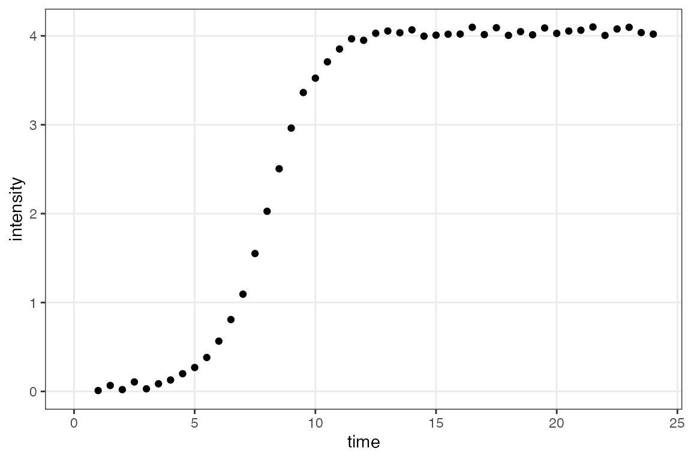
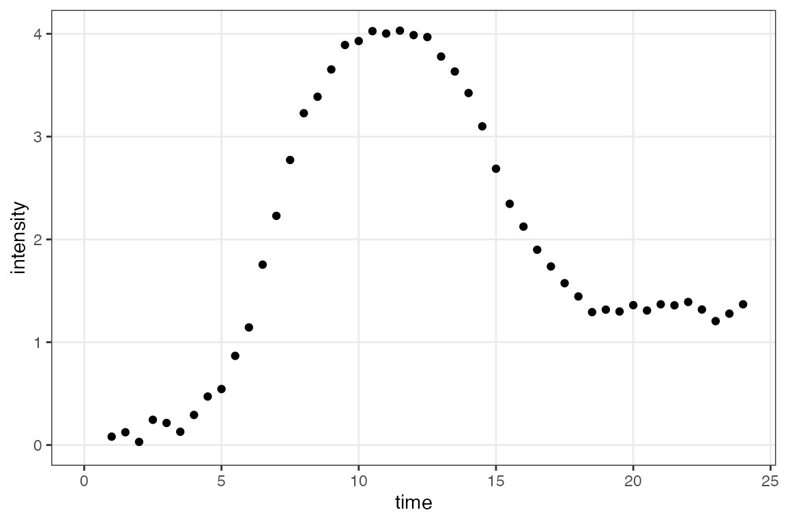
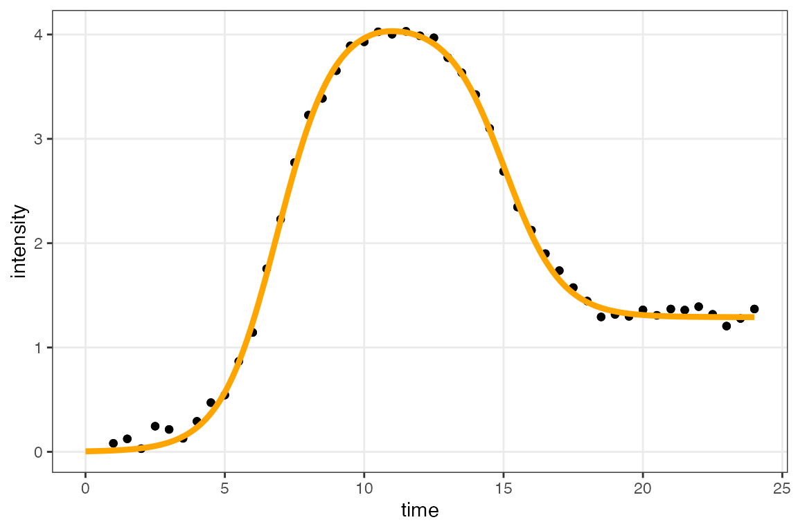
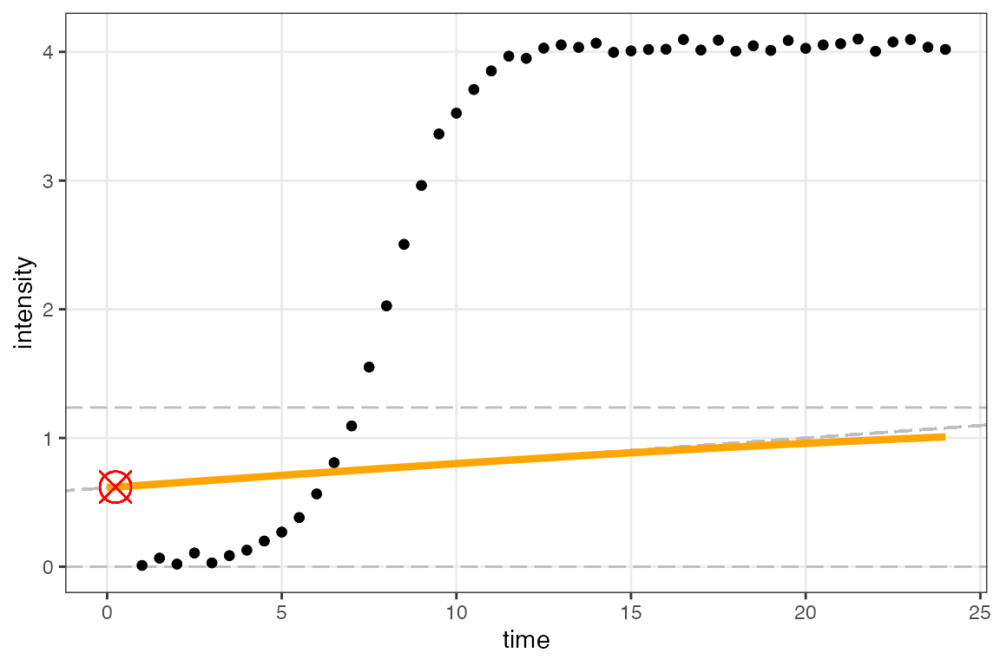
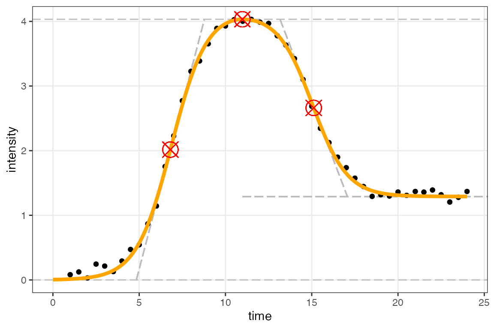

Plotting the fitted models
Umut Caglar, Claus O. Wilke
2025-08-01
Source:vignettes/plotting_fitted_models.Rmd
plotting_fitted_models.RmdThe sicegar package provides a helpful function that can generate plots of the fitted models. This function is built on top of the ggplot2 plot library.
To demonstrate figure generation, we first generate simulated sigmoidal and double-sigmoidal data and fit the respective models to these datasets.
# simulate sigmoidal data
time <- seq(1, 24, 0.5)
noise_parameter <- 0.1
intensity_noise <- runif(n = length(time), min = 0, max = 1) * noise_parameter
intensity <- sigmoidalFitFormula(time, maximum = 4, slope = 1, midPoint = 8)
intensity <- intensity + intensity_noise
dataInputSigmoidal <- data.frame(intensity = intensity, time = time)
# simulate double-sigmoidal data
noise_parameter <- 0.2
intensity_noise <- runif(n = length(time), min = 0, max = 1) * noise_parameter
intensity <- doublesigmoidalFitFormula(time,
finalAsymptoteIntensityRatio = .3,
maximum = 4,
slope1 = 1,
midPoint1Param = 7,
slope2 = 1,
midPointDistanceParam = 8)
intensity <- intensity + intensity_noise
dataInputDoubleSigmoidal <- data.frame(intensity = intensity, time = time)
# fit models to both datasets
fitObj_sm <- fitAndCategorize(dataInput = dataInputSigmoidal)
fitObj_dsm <- fitAndCategorize(dataInput = dataInputDoubleSigmoidal)Now we can plot the results using the function
figureModelCurves(). The default function assumes that the
lower asymptote (when x is at negative infinity) is zero, but the
argument use_h0 = TRUE can be used to estimate the lower
asymptote. The function returns a ggplot2 plot that can
be saved or displayed directly. The function has several different
options.
First, we can plot only the raw input data.
# sigmoidal raw data only
figureModelCurves(dataInput = fitObj_sm$normalizedInput)
# double-sigmoidal raw data only
figureModelCurves(dataInput = fitObj_dsm$normalizedInput)
Second, we can plot the input data with the fitted lines.
# sigmoidal fit
figureModelCurves(dataInput = fitObj_sm$normalizedInput,
sigmoidalFitVector = fitObj_sm$sigmoidalModel)
# double-sigmoidal fit
figureModelCurves(dataInput = fitObj_dsm$normalizedInput,
doubleSigmoidalFitVector = fitObj_dsm$doubleSigmoidalModel)
Third, we can additionally visualize the parameter estimates, by
setting showParameterRelatedLines = TRUE.
# sigmoidal fit with parameter related lines
figureModelCurves(dataInput = fitObj_sm$normalizedInput,
sigmoidalFitVector = fitObj_sm$sigmoidalModel,
showParameterRelatedLines = TRUE)
# double-sigmoidal fit with parameter related lines
figureModelCurves(dataInput = fitObj_dsm$normalizedInput,
doubleSigmoidalFitVector = fitObj_dsm$doubleSigmoidalModel,
showParameterRelatedLines = TRUE)
Note that the last example only works for models that had additional
parameters calculated using parameterCalculation(). This is
done automatically when fitting with fitFunction(), but
needs to be done manually when fitting with
multipleFitFunction().